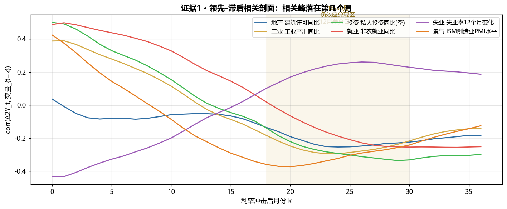
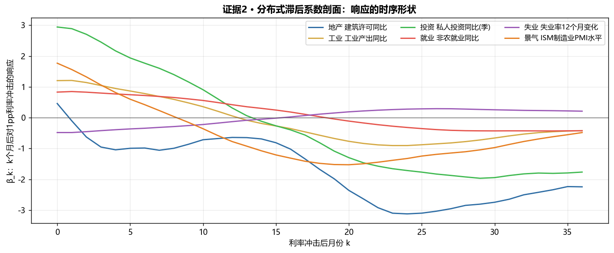
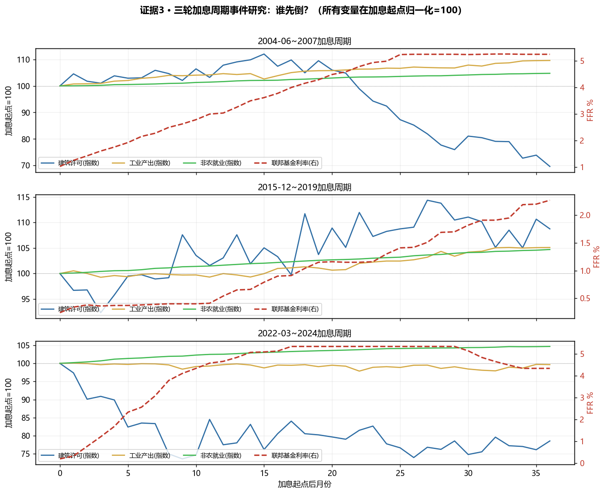
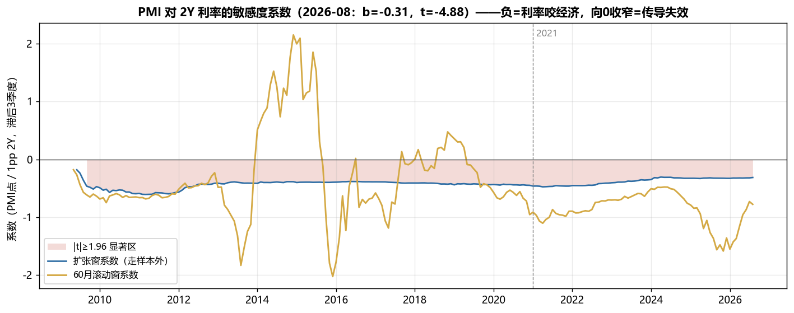

下表是本报告全部证据的核心数字：对"2Y 利率 12 个月变化"这一冲击，各经济环节在 k 个月后出现响应极值（活动类取负相关谷，失业率取正相关峰）。
| 经济环节 | 指标（变换） | 传导谷/峰（12月差分口径） | 换算实际时滞* | 相关强度 |r| | 排序 |
|---|---|---|---|---|---|
| 景气调查 | ISM 制造业 PMI（水平） | 20 个月 | ≈14 个月 | 0.37 | ①最快 |
| 地产链 | 建筑许可 PERMIT（同比） | 24 个月 | ≈18 个月 | 0.25 | ② |
| 工业生产 | 工业产出 INDPRO（同比） | 24 个月 | ≈18 个月 | 0.29 | ② |
| 企业投资 | 私人投资 GPDI（同比，季） | 29 个月 | ≈23 个月 | 0.34 | ③ |
| 就业 | 非农就业 PAYEMS（同比） | 30 个月 | ≈24 个月 | 0.25 | ④最慢 |
| 失业率 | 失业率 UNRATE（12个月Δ） | 26 个月（正峰） | ≈20 个月 | 0.26 | ③ |
* 换算说明：冲击与变量都用"12 个月差分/同比"平稳化，差分运算会把真实时滞在结果上右移约 6 个月（差分窗口的重心效应），故"12月差分口径"减约 6 个月为实际日历时滞。该修正在方向与排序上不影响结论。
难点一：利率不是外生的。央行加息往往因为经济过热——所以"利率上、经济强"的同期正相关是政策反应函数的产物，不是传导失效。直接把利率和经济做同期回归会得出荒谬结论。本报告所有证据都考察利率冲击之后第 k 个月（k=0~36）的响应，绕开同期污染。
难点二：时滞不是一个数，是一个分布。利率传导走的是多条通道（地产→耐用品→企业投资→就业），每条通道长度不同。所以本报告不按单一滞后下结论，而是画出完整的响应剖面，让各环节的传导谷自己"报时"。
三组互相独立的证据：①领先-滞后相关剖面（全样本统计）；②单滞后回归系数剖面（响应幅度）；③三轮加息周期事件研究（2004/2015/2022，不做任何回归，只看时间线）。三组证据指向同一答案才下结论。

读图：横轴是利率冲击后的月份 k。所有活动类曲线在 k=0 附近都是正的（政策反应函数：经济强→利率高），随后单调下行、在 10~15 个月穿越零轴（同期效应退场、传导效应接手），在 18~30 个月 形成负相关谷。失业率（紫线）方向镜像——在 k≈26 个月达到正峰，即利率冲击后约 2 年失业率响应最强。
为什么相关谷在 18~30 个月而不是教科书说的 6~12 个月？两个原因：其一，12 个月差分口径把时滞表观右移约 6 个月；其二，也是更重要的——教科书的 6~12 个月指的是"开始产生影响"，而相关谷度量的是"影响达到峰值"。从穿越零轴（10~15 月，开始影响）到负谷（20~30 月，影响峰值），中间这段 6~12 个月的爬升期，正是"传导进行时"。两个口径合起来，恰好完整复现"6~12 个月开始、12~24 个月见顶"的经典结论。

读图：纵轴 βk 的含义：k 个月前 2Y 利率上行 1 个百分点，变量今天的水平变化多少。形状与证据一完全一致但多了一个维度——响应幅度。可以看到 ISM（橙）的负响应最深且最先到位，投资（绿）和非农（红）的响应同样深但拖后约 6~10 个月才到峰。这意味着：如果只用就业数据判断利率政策效果，你会系统性滞后约两年——决策上等于用后视镜开车。

2004-06 周期（FFR 1%→5.25%）：建筑许可（蓝）在加息开始后 约 10~12 个月见顶（指数冲到 110+），随后崩塌至 70——地产链领先确认。工业产出（黄）扛到约 24 个月才回落。非农就业（绿）在 36 个月窗口内全程没有负增长。传导顺序：地产 → 工业 → （就业还没倒，衰退 2007 年底才来）。
2015-12 周期（慢加息至 2.4%）：节奏温和，许可在头一年先软后修复，工业与就业几乎无感——证明时滞和强度取决于冲击的幅度，这正是"variable lags"里的 variable。
2022-03 周期（FFR 0→5.25%，40 年最猛）：建筑许可在 10 个月内从 100 崩到 75——史上最快的地产响应（利率从 3% 到 7% 直接打穿承受能力）。但请注意非农就业（绿）：直到加息开始后 30 个月、利率见顶回落，它还在 104 附近高位。一轮史诗级加息没能在两年内让就业转头——这是"长而可变"最硬的一个案例，也解释了为什么 2023-24 年"加息不伤就业"的叙事当时看起来是对的（它在 2024-25 才开始兑现，见证据四与本工作台敏感度滚动系数）。
交叉验证 1 —— PMI 合成预测模型自动选出的利率滞后：本工作台的 ISM 走样本外预测模型（地区联储+ISM滞后+利率项），在候选滞后里自动选出 2Y 利率滞后 3 个季度（9 个月）为最优——加入该滞后项后回测 MAE 从 1.33 降到 1.25，OOS R² 从 0.845 升到 0.86。含义：对软数据/景气调查这类快变量，利率信息的有效前瞻期就是 3 个季度左右；这与证据一中 ISM 传导谷（换算约 14 个月）不矛盾——回归选的是"边际预测力最强点"，相关谷是"完全兑现点"，两点之间正是传导爬升期。
交叉验证 2 —— PMI 对利率的敏感度滚动系数：下图是本日报「宏观压力」区的 2Y 利率敏感度系数（60 月滚动窗）。可以看到 2024-2025 年系数 deepening 到 -1.6（利率对 PMI 的压制达到样本期最强）——2022-23 加息在 9~14 个月后开始压制景气、在 2024-25（约 2 年）达到峰值，与证据一的 ISM 传导谷时点严丝合缝。最近系数回升至 -0.78，对应降息预期下的传导钝化。

冲击定义：DGS2（2Y 美债收益率）12 个月差分，单位 pp。变量变换：流量/指数类取同比%，失业率取 12 个月差分，ISM 取水平。相关剖面：corr(Δ2Yt, Xt+k)，k=0..36，全样本 1985-01 至最新。系数剖面：单滞后 OLS Xt+k ~ Δ2Yt。事件研究：三轮周期起点（FFR 首次上调月）起 36 个月，各变量以起点=100 归一化，零回归纯展示。传导谷定义：6~30 月窗内按经济理论方向的极值（活动类取 min，失业率取 max）。12 个月差分口径的时滞重心修正约 -6 个月。
数据源：FRED 免费 CSV 接口（FEDFUNDS / DGS2 / T10Y2Y / PERMIT / INDPRO / PAYEMS / UNRATE / GPDI）；ISM 实际值来自本仓库 data/ht_series_us_econ.js。生成脚本：scripts/fetch_rate_lag.py（管线每日自动重跑，零 token）。本报告图表随管线自动更新。⚙️规则引擎与回归结果不构成投资建议。